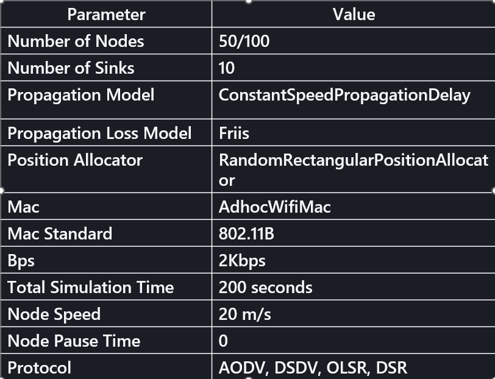
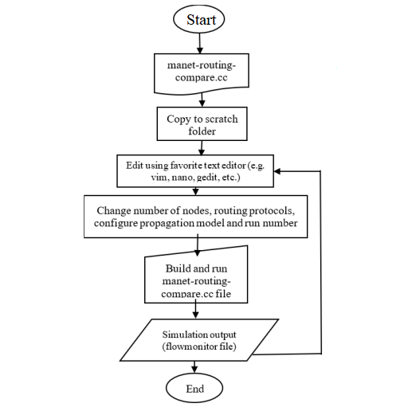
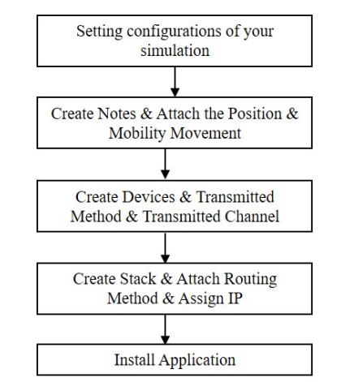
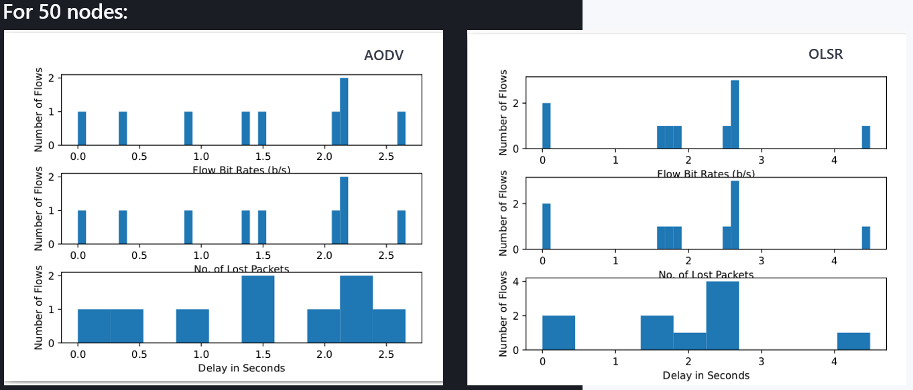
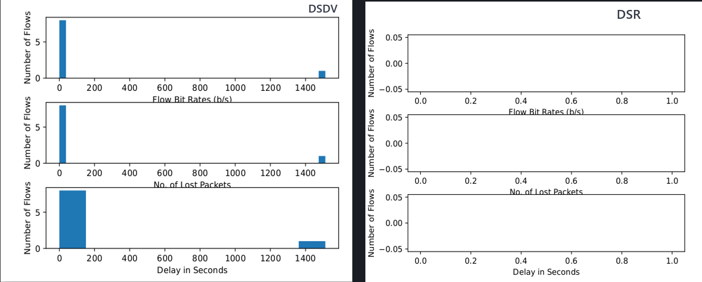
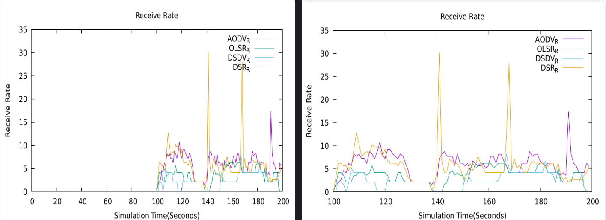
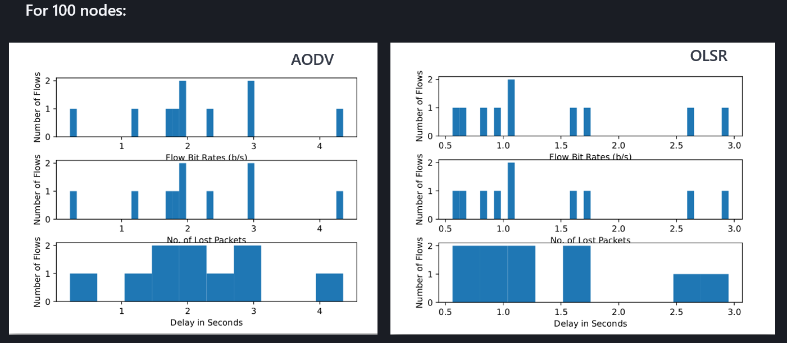
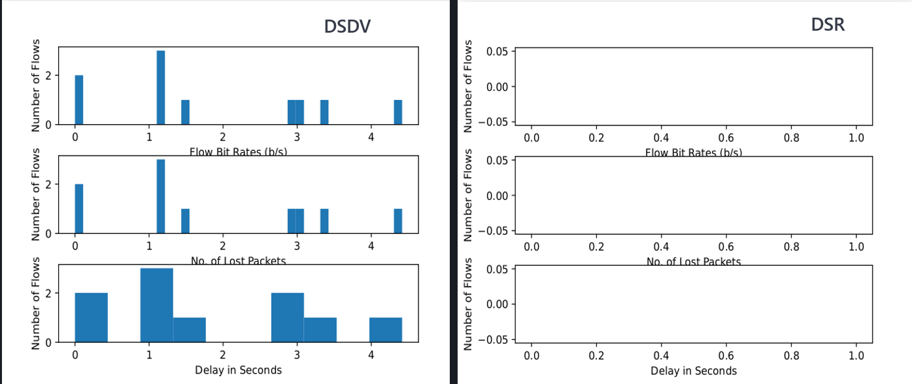

Performance comparison of MANET routing protocols
MANET stands for Mobile Ad-Hoc Network, which forms a temporary network without the assistance of centralized administration. It consists of a group of wireless portable hosts. The ability of joining or leaving any network anytime is the key feature of MANET. The performance quality of MANET can be measured based on various parameters including packet delivery ratio, routing overhead, average end-to-end delay, jitter and packet loss and so on. Network circumstances also can impact the performance. There are different routing protocols for MANET. Ad hoc On-Demand Distance Vector Routing, Destination-Sequenced Distance Vector Routing, Dynamic Source Routing, and Optimized Link State Routing.
In this project, we aim to compare different routing protocols of MANET and the performances (AODV, DSDV, OLSR and DSR). Our main objective is to figure out which routing protocol has the best overall performance.
MANET is a collection of mobile nodes that forms a temporary network. Nodes work as both routers and hosts for forwarding packets. There is no need of centralized administration.
Following 4 protocols have been used for our project.
The routes between nodes are established in 2 steps: route discovery and route maintenance.
‘RREQ’, ‘RREP’, ‘RRER’ messages are exchanged here.
Here, transmitted packets have the complete address.
This is also carried out in 2 steps like AODV.
Here source node first looks for the route in the cache before exchanging messages.
It is an optimization of link state routing algorithm.
It reduces number of retransmission for broadcasting with the uses of Multi Point Relays (MPRs).
OLSR utilizes HELLO and Topology Control (TC) messages.
It is a table driven routing protocol, which works on the Bellman Ford routing algorithm.
Four routing protocols were simulated using NS3
NS3 version: 3.31
Operating system: Ubuntu 22.04
Receiving rate
Number of flows Packet loss
Flow Bit Rates (bit/second)
Delay in seconds








Under some circumstances, the protocols took significant amount of time to generate any packet.
In our case, DSDV took longer time to build as well as stimulate any packets.
We could not generate any trace of flows in DSR.
Routing message overhead was low and more nodes would have increased the number of flows.
We compared the protocols using UDP, however Ping and TCP traffic can also be used.
OPNET can be used instead of NS-3 simulator.
We could have used varieties of nodes (between 10 nodes and 200 nodes) to see how the different performance matric changes with the small and extremely high number of nodes.
Flow monitor does not capture any flows using DSR, but we can use other performance matrices to come to a solution.
1. G. Kaur and P. Thakur, "Routing Protocols in MANET: An Overview," 2019 2nd International Conference on Intelligent Computing, Instrumentation and Control Technologies (ICICICT), Kannur, India, 2019, pp. 935-941, doi: 10.1109/ICICICT46008.2019.8993294.
click here to visit
2. T. Sapna, K. Deshpande and K. Ravi, "Study On Routing Protocols For MANETs," 2018 International Conference on Computational Techniques, Electronics and Mechanical Systems (CTEMS), Belgaum, India, 2018, pp. 322-325, doi: 10.1109/CTEMS.2018.8769137.
click here to visit
3. M. N. Alslaim, H. A. Alaqel and S. S. Zaghloul, "A comparative study of MANET routing protocols," The Third International Conference on e-Technologies and Networks for Development (ICeND2014), Beirut, Lebanon, 2014, pp. 178-182, doi: 10.1109/ICeND.2014.6991375.
click here to visit
4. Neelu Kumari, Sandeep Kumar Gupta, Rajni Choudhary, Shubh Laxshmi Agrwal, “New Performance Analysis of AODV, DSDV and OLSR Routing Protocols for MANET”, 2016 International Conference on computing for Sustainable Global Development (INDIACom), 978-9-3805-4421- 2/16/$31.00©2016 IEEE
click here to visit
5. S. Tamilarasan. “A comparative study of multi-hop wireless ad-hoc network routing protocols in MANET,” International Journal of Computer Science Issues (IJCSI), 8(5), pp. 176—184, 2011.
click here to visit